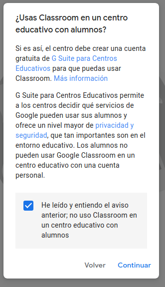

Sobre ClassRoom de G Suite
Sobre ClassRoom al intentar crear una clase me sale un aviso:

quiere decir que si lo usas en un centro educativo con sus alumnos estas incumpliendo sus condiciones.
Veo un programa bastante completo e interesante pero como verás en el apartado video conferencias. no lo veo muy apto para ello.
Video conferencias
Class Room de G Suite
Este es en el que te veo mas interesada.
Tiene algunos defectillos a tener en cuenta.
-
Precisa de una cuenta de google.
Esto que en principio no debería ser un gran problema (yo tengo una), hay personas que no la tienen y se verían obligadas (forzadas) a tenerla. -
No realiza video conferencias directamente.
Utiliza HANGOUTS y este tiene sus propias limitaciones. No tienes como maestro un control de la aplicación.- Para dar clases es importante configurar ( Silenciar por defecto ) a los asistentes y en este caso puedes silenciarlos pero de uno a uno y no por defecto.
- Los alumnos tienen la misma capacidad de silenciar, bloquear pantalla o inclusibe de expulsar de la clase a cualquier otro alumno o incluso al profesor.
- No pueden conectarse mas de 10 personas a la vez.
Otro vide que explica las diferencias entre HANGOUTS y HANGOUTS Meet. El metodo Para trabajar me parece mas completo el anterior.
Como deja entrever Gsuite no es gratuito 5.2 € por usuario al mes, y Hangouts Meet a partir de €2,499.
Definitivo JITSI
Recordando lo que hablamos sobre el ClassRoom Tenemos un programa que:
-
Solo precisa que TU tengas una cuenta de google, los demas no lo necesitan.
Para (sólo si quieres) poder programar en el google calendar una sesion
y poder guardar sesiones o nombres de usuarios, grabar sesiones, etc... -
Tienes como maestro un control muy bueno de la aplicación.
-
Puedes silenciar a todos los asistentes permitiendo que puedan "levantar la mano" y
cuando veas el momento darle la oportunidad para hablar o enviar mensajes de texto por el chat. -
Los alumnos NO tienen la misma capacidad de silenciar,
bloquear pantalla e inclusive de expulsar de la clase a cualquier otro alumno o incluso al profesor. - Pueden conectarse personas sin límite.
-
La comunicación es encriptada lo que quiere decir que su nivel de seguridad es muy alto
solo la persona que conoce el nombre de mi sesion se puede conectar y nadie
que intercepte la señal por el camino puede conocer el flujo de datos real
(Quiere decir que un vecino no podria ver o escuchar la conversación). - Puedes usar una contraseña, una vez que la establezcas solo quién la conozca podrá conectarse.
-
Puedes silenciar a todos los asistentes permitiendo que puedan "levantar la mano" y
-
Se puede compartir la pantalla, ya sea la pantalla completa, una ventana completa o
inclusive una sola solapa del navegador que estas utilizando.
Lo que es muy util porque te asegura una intimidad a la hora de compartir un contenido que tengas en el mismo escritorio. -
Se puede compartir video de youtube directamente por su plataforma y
otros tipos de enlaces. -
Es muy facil modificarle la calidad de imagen para poder usarlo con personas que tengan un acceso a internet mas limitado.
No es muy aconsejable abusar de ello, porque pierde demasiada resolución y y no es bueno para una buena comunicación
pero a veces es necesario. -
NO precisa de instalación de software alguno con conectarse por la pagina web es suficiente.
No obstante, tiene programas nativos para todos los sistemas operativos del mundo.
A nivil del profesorado aconsejo instalar el programa nativo y acceder con la cuenta de google,
de esta forma tendremos acceso ilimitado a todas sus herramientas de una forma mas cómoda,
para instalarlo accedemos a su pagina de descarga y descargamos su version estable mas reciente.
Otros utiles para clases
Como hablar a la camara
Pizarra
Te explica como usar y compartir una pizarra. Nota he cambiado este video por otro mejor. Yo optaria por Ardesia.
Para Ubuntu
Instalar Jitsi en Ubuntu 18.04 con Docker y Let’s Encrypt.
Se puede usar el OBS usando con script virtual-cam.